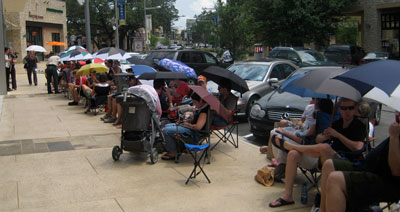

That’s the way I described the iPhone to anyone I showed it off to over the weekend. The thing is amazing. Easily the most advanced and beautiful UI that we have ever seen on a portable device.
I waited outside the Apple Store most of Friday to get an iPhone, and it contrasted very favorable with “my experience camping out for the Wii”:http://www.manton.org/2006/11/nintendo_wii_purchase.html. The 6pm sale time decision was a smart one. It turns out waiting in line all day wasn’t necessary, but for anyone who had to have one on day 1 it was the safest choice, and it makes for a fun community. I ran into a bunch of people I knew and met new folks as well. Enjoyed catching up with “Donna Kidwell”:http://www.gamermom.com/ and had a chance to chat at length with Jeremy Derr of “Barton Springs Software”:http://www.bssware.com/.
“Damon YouTubed the line”:http://damonclinkscales.com/past/iphone-line-at-the-apple-store-the-domain/ in the early afternoon and by 6pm the line was roughly 250 people. We were in the low 40s and were in and out of the Apple Store in 15 minutes. They ran a great launch. Also a nice assortment of free water, tea, pizza, and coffee from both Apple and surrounding businesses. “Here’s a shot of me”:http://flickr.com/photos/digitalnomad/697023122/ from Damon’s Flickr stream.

Here are my posts to Twitter throughout the day, which also show part of the story:
6:34am: Good morning iPhone Day! Weather forecast in Austin for today: 40% chance of showers and storms.
10:15am: It’s only 10am but already realized I need to go to Plan B. Bribe friends already in line to use their 2nd iPhone purchase.
11:09am: Change of plans. Heading to the Apple Store now to join in the line-waiting fun. Will it be too late?”
12:26pm: I expected rain, but that seems unlikely. It’s hot like a real Austin summer here in the iPhone line.
2:32pm: Hanging out in The Line with Jeremy of Barton Springs Software and @damon. Apple Store is closed. Had some lunch and a Starbucks soy latte.
4:03pm: 2 hours left. We can redeem our free Starbucks coffee coupons now. Excited! (About the iPhone. Not the coffee.)
6:30pm: Got my iPhone.
7:35pm: Activation will have to wait. Ratatouille.
8:18pm: Movies all sold out. Pre-activation dinner at Kerby Lane instead.
9:53pm: Activation took less than a minute. Also, no plan choice. Just $20 added on to what I already pay, I guess.
Other reviews around the web:
“Matt Haughey”:http://a.wholelottanothing.org/2007/07/01/24-hours-with-the-iphone-my-dream-mini-computer/: “So in conclusion, the iPhone is nice from start to finish, but Safari is really the thing that turns it from a phone into a mini-laptop. Once I get more used to two-thumb typing, the last limitations that keep it from feeling like a real computer will be gone.”
“Scott Stevenson”:http://theocacao.com/document.page/488: “I usually don’t get too into pop culture events, but this is different. The Mac is going mainstream in a big way.”
“Ryan Irelan”:http://www.ryanirelan.com/past/2007/07/01/apple-iphone-brilliant-device-horrendous-activation/: “I probably tried out the emergency call slider three dozen times. I wonder if anyone actually called 911 because their phone wasn’t activating quickly enough.”
“Steven Frank”:http://stevenf.com/2007/07/the_official_stevenf_iphone_review.php: “Best phone ever. And given the rest of the industry’s generally pervasive cluelessness about pretty much everything, I don’t expect it to be surpassed by anything until the iPhone 2.”
“John Gruber”:http://daringfireball.net/2007/06/iphone_first_impressions: “Overall day one impression: the iPhone is 95 percent amazing, 5 percent maddening. I’m just blown away by how nice it is – very thoughtful UI design and outstanding engineering.”
 Along with most of our house, my office is packed up and ready to move this week. The photo to the right is of one of the handful of items in a box labeled “Manton’s desk,” or, if someone else had her way, “Random junk Manton saves to remember the past but which should really be in the trash can.”
Along with most of our house, my office is packed up and ready to move this week. The photo to the right is of one of the handful of items in a box labeled “Manton’s desk,” or, if someone else had her way, “Random junk Manton saves to remember the past but which should really be in the trash can.” Other highlights of WWDC 2007 were away from the sessions: walking Chinatown with “Willie”:http://willie.tumblr.com/ on Sunday in search of the illusive bakery item; hitting the “SF Mac Indie party”:http://sfmacindie.com/ that night and hanging out with fellow developers afterwards; Buzz Andersen’s party Monday, catching up with “Lane”:http://www.monstro.com/ and the host; the “Dan Benjamin”:http://www.hivelogic.com/ annual breakfast; Apple “Design Awards”:http://developer.apple.com/wwdc/ada/ on Tuesday, which had a record number of wins for apps I’ve actually used; accidentally walking into a James Morrison concert at the Apple Store (left photo); being interviewed by Scott McNulty of “TUAW”:http://www.tuaw.com/, though I secretly hope they will decide not to air it; enjoying great Italian with the “VitalSource”:http://www.vitalsource.com/ team on Wednesday before catching the tail end of “CocoaHeads”:http://theocacao.com/document.page/480; plus the Apple Bash and more drinks and discussion Thursday night.
Other highlights of WWDC 2007 were away from the sessions: walking Chinatown with “Willie”:http://willie.tumblr.com/ on Sunday in search of the illusive bakery item; hitting the “SF Mac Indie party”:http://sfmacindie.com/ that night and hanging out with fellow developers afterwards; Buzz Andersen’s party Monday, catching up with “Lane”:http://www.monstro.com/ and the host; the “Dan Benjamin”:http://www.hivelogic.com/ annual breakfast; Apple “Design Awards”:http://developer.apple.com/wwdc/ada/ on Tuesday, which had a record number of wins for apps I’ve actually used; accidentally walking into a James Morrison concert at the Apple Store (left photo); being interviewed by Scott McNulty of “TUAW”:http://www.tuaw.com/, though I secretly hope they will decide not to air it; enjoying great Italian with the “VitalSource”:http://www.vitalsource.com/ team on Wednesday before catching the tail end of “CocoaHeads”:http://theocacao.com/document.page/480; plus the Apple Bash and more drinks and discussion Thursday night.